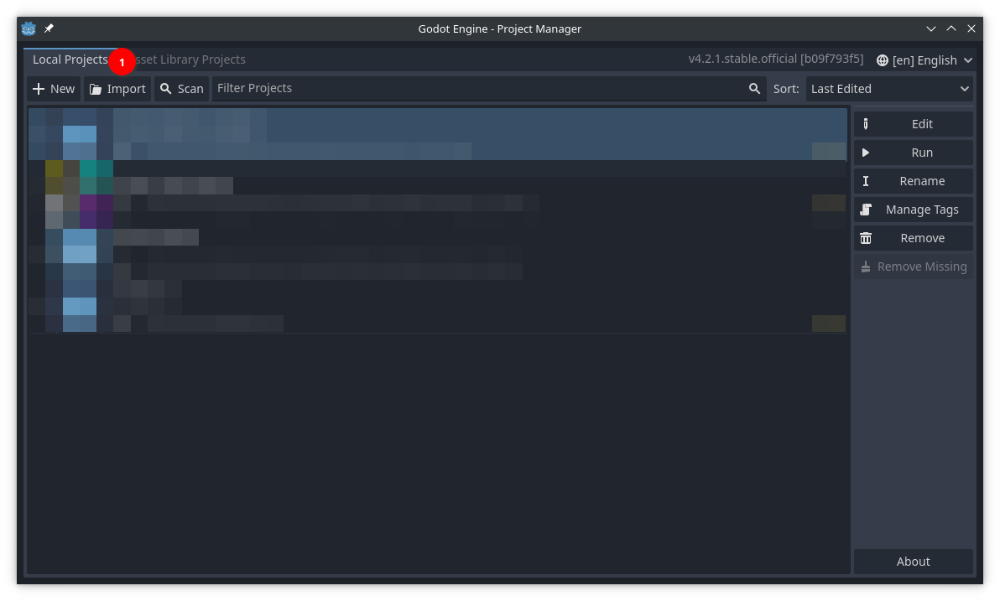
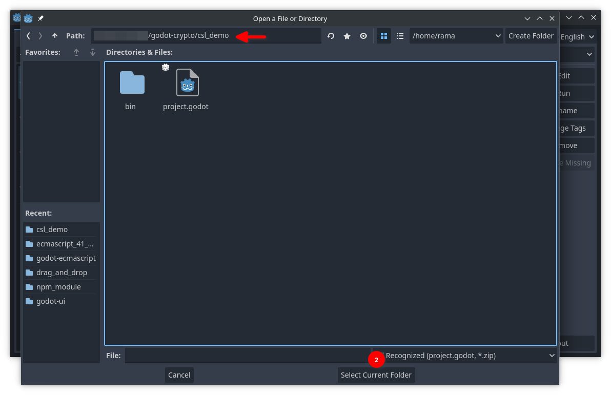
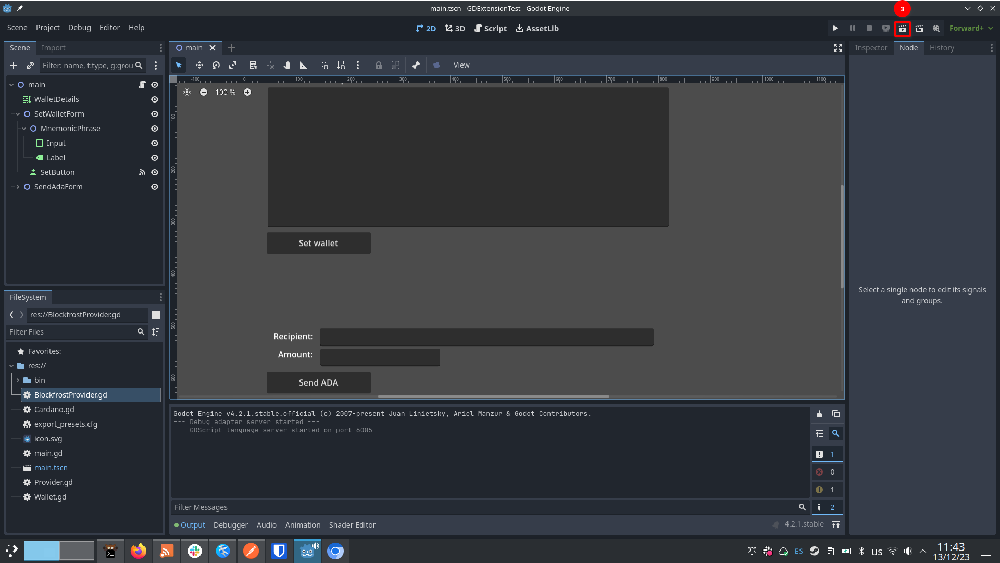
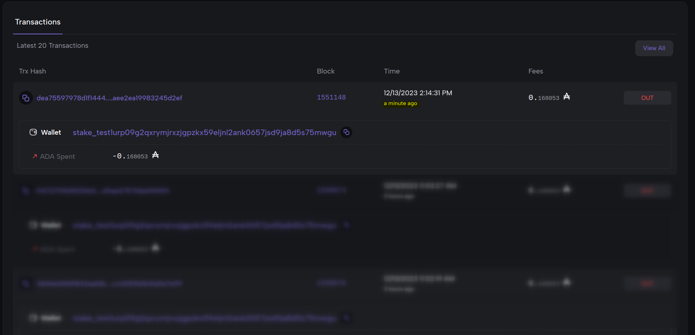

Cardano Game Engine Wallet - Godot Integration
Cardano Game Engine Wallet is an integrated light wallet and off-chain SDK for the Godot engine and Cardano blockchain. The project is currently a work-in-progress.
This project was publicly funded by the Cardano community in round 10 of Project Catalyst. Thank you for your support!
Status
The project currently consists of a small demo that showcases two features:
- Generating / importing a wallet by entering a seed-phrase
- Transferring ADA to an arbitrary Cardano address.
At the momment, the demo runs on the preview testnet and was tested on Linux and Windows x86-64 PCs.
How to build and run the demo with Godot
Pre-requisites
-
Godot Engine 4.2: The demo runs on version 4.2 of the Godot engine, which you can download at the official website.
-
A wallet with funds in the Cardano preview testnet: You can use any wallet you like, as long as it supports the preview testnet. Take note of the seed-phrase of your wallet. To get test ADA (tADA), use the Cardano testnet faucet.
-
A Blockfrost token: Our demo uses Blockfrost as a provider for querying the blockchain and submitting transactions. You will need a Blockfrost account and a preview testnet token.
Setup
First, clone the repository and enter the top directory.
Download godot-cardano.zip from the releases page, unzip it and copy the addons folder into the demo folder of the repo.
Inside the demo folder, create a "preview_token.txt" file with your Blockfrost preview token.
Open the Godot editor. You will be greeted by the Project Manager. Import and open the project located in the demo folder.


You should now have the Godot editor window with the project loaded. Press the button for running the current scene (or press F5).

How the demo works
The demo consists of two forms:
- A form for filling in the wallet's mnemonic phrase
- A form for transferring ADA to an arbitrary address
The two forms must be filled in sequence.
-
First fill in the seed phrase of the wallet specified in the Pre-requisites section.
-
Click on "Set wallet". If the wallet is loaded correctly, the demo should inform you of the amount of UTxOs found in the address associated to that wallet (as well as the amount of funds in it).
-
Set the recipient address of the transaction (you may use the address of your wallet if you want).
-
Fill in the amount of lovelace to send. A reminder that lovelace is the smallest unit of ADA currency: 1 ADA = 1,000,000 lovelace. You should send at least 969,750. This is the smallest value a UTxO may have in Cardano, any less will trigger a runtime error.
-
Click on "Send ADA". This will use the Blockfrost backend to submit the transaction to the Cardano blockchain.

At this point the demo is over. The demo will not inform you of the success of the transaction, but you may use any tool to confirm that a transaction occurred between your wallet and the recipient.
For instance, here we use Cardanoscan (Preview) to monitor the wallet address and confirm that a transaction occurred:

What's next?
Check our milestones here!
You may also read our Proof Of Achievement / Research report written for the milestone as well. This document discusses our work and rationale for the technical decisions we have made.
Development
Development is supported on linux. On other platforms, use a virtual machine or WSL. To get started, clone the repo and enter it.
Setup
Install Nix and enable flakes, or do it in one step with the Determinate nix installer.
Build Asset
Build and Run Demo
Run Integration Test on preview network
Before running the tests, ensure that test/preview_token.txt is populated
with a valid Blockfrost preview key, and that test/seed_phrase.txt is
populated with a valid 24-word seed phrase and the address is funded with
testnet ADA from the faucet. Alternatively, your seed phrase can be set via the
TESTNET_SEED_PHRASE environment variable. The address used will be the
default address in most light wallets, as well as in the demo app provided with
this project. Once these are set, run the test suite:
Run integration test on preview network.
Development shell
Enter development shell with all dependencies in PATH and addons linked. A list of useful commands is displayed.
Here are some useful workflows inside the development shell:
Build the Godot extension
Open the demo app in Godot editor
With the demo or test project open, the Godot editor should automatically reload the gdextension after cargo build.